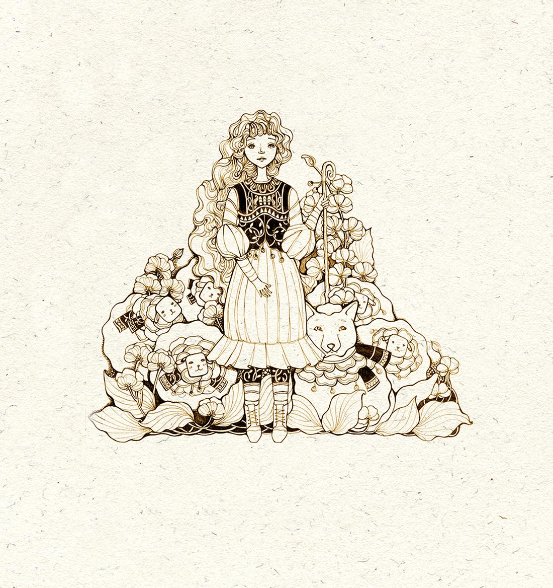

A wish can change everything.
A seemingly poor, but kind shepherdess sets out on an exciting, imaginative and humorous journey — and must learn to choose her wishes wisely.
At first, the shepherdess is close to despair because of the difficulties she faces. But her story does not end there. A series of trials awaits her, and along the way she receives unexpected help from other people and magical beings.
With courage and perseverance, she faces each challenge. Talking animals, mysterious magical numbers, and enchanted places and times make this fantastic tale an adventure full of wonder.
After passing the trials, the shepherdess is richly rewarded — in a story that celebrates thoughtful wishes, kindness and the courage to keep going.

A fairy tale full of imagination, warmth and unexpected magic.